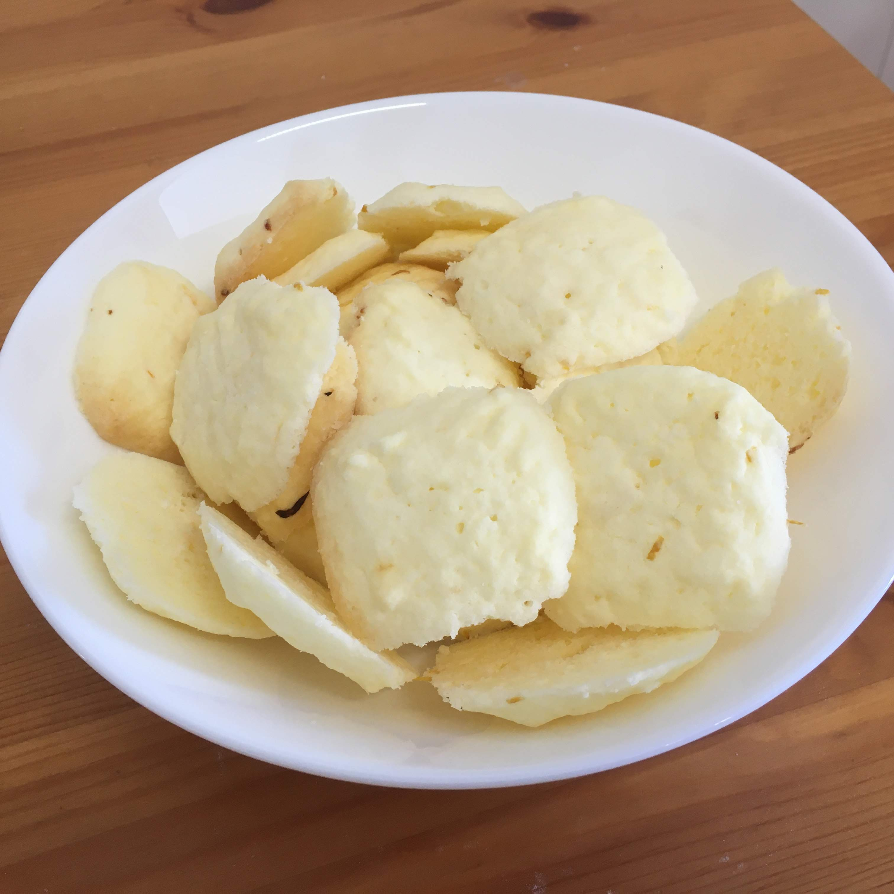

Sequilhos de limão

Ingredientes
- 1 xícara de amido de milho (150 g)
- 4 colheres (sopa) de açúcar (60 g)
- 4 1/2 colheres (sopa) de manteiga amolecida (90 g)
- raspas de 1 limão
- 1 a 2 colheres (sopa) de sumo de limão (15 a 20 ml)
Modo de preparo
- Misturar bem o amido de milho, o açúcar, a manteiga e as raspas de limão , formando uma farofinha.
- Acrescentar aos poucos o sumo de limão, misturando até dar o ponto, e levar para gelar por 5 minutos.
- Moldar em quadradinhos ou bolinhas e dispor em fôrma untada.
- Assar a 180º C a 200º C por 15 minutos.
- Esperar esfriar antes de tirar da fôrma e servir.
- Armazenar em potes fechados.